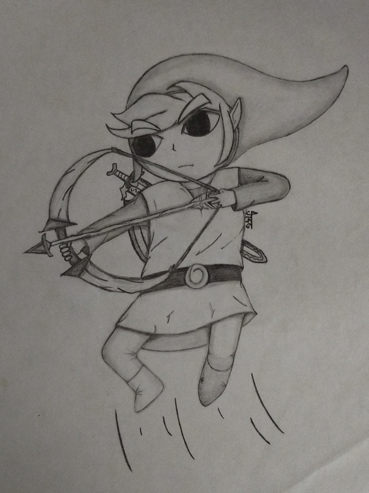
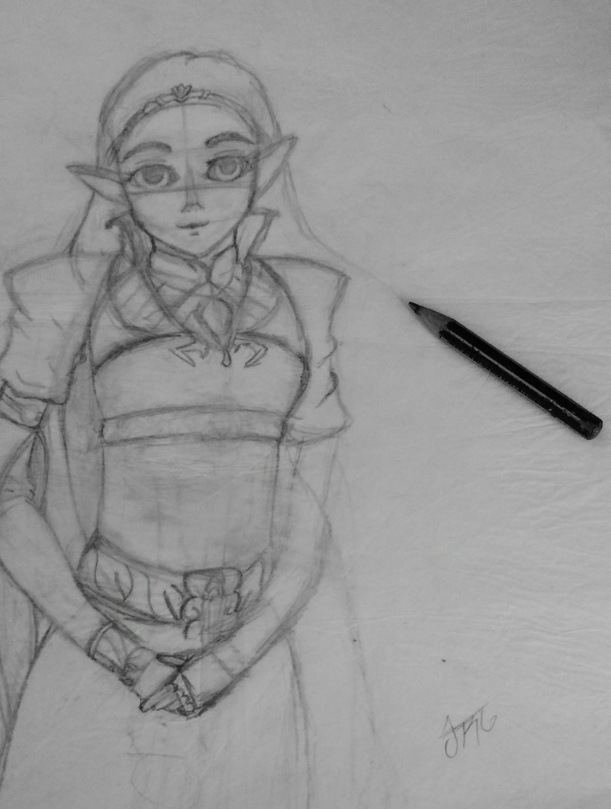
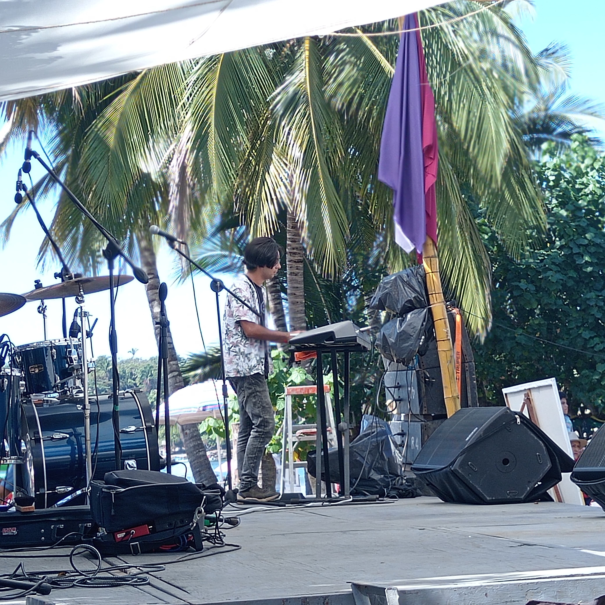

Gracias a Dios tengo unos padres que me han apoyado en mis idea
locas,
de verdad es un privilegio, por eso he porbado de todo, y aunque no tuve
presupuesto muchas veces, me las apañe con mexicanadas y creatividad xd
Dibujo

Un fan art que le hice a Toon Link despues de jugar Zelda: The wind waker

Otro fan art pero ahora de Zelda, este se quedó en boceto y es de lo ultimo que dibuje, la
verdad eran los unicos que tengo a mano u.u
Música
Saxofón: es mi instrumento pricipal, hace casi 10 años (por ahí del 2014) fui becado con mis hermanas para
estudiar en la OEPV, increiblemente aún hay fotos nuestras en
su sitio web
(nota del editor, osea yo: encontré un blog que me hicieron y
bro... no sabia que existia ni lo habia leído 😭🙏) Jonathan Reyes, saxofonistaUna foto del 2015
Piano
Aprendí de manera autodidacta ahí por el 2018, lo uso para tocar en la iglesia.

Esa foto es del 2/11/2024 en un evento de alcance para jovenes
Produccion musical: Me divierte mucho, lo disfruto un
montón; en mi proyecto mas reciente produje a mi hermana en un
cover (hubo que apañarselas sin el equipo de grabacion debido)
¯\_(ツ)_/¯ Nuestro cover abajo ⤵️
(Y éste link es la canción
original)
⚡︎ Hobbies deportivos ⚡︎
No soy la persona mas deportiva, pero si disfruto de practicar de vez en cuando:
a continuacion una tier
list mía de los deportes que practico